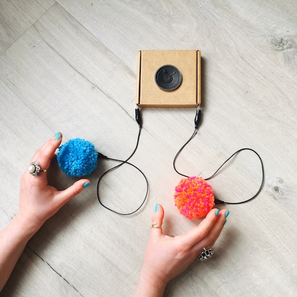
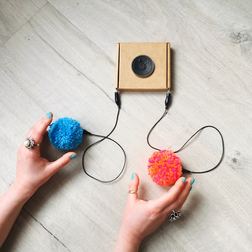

March 25/26, 2021
Theme 2021:
Bridging Distance
Inter/sections is the almost annual event organised by the PhD students of the Media and Arts Technology CDT at Queen Mary University London. Due to the COVID-19 pandemic we skipped 2020, but are back this year with a fully-online two-day event of talks and workshops.
Technology is what keeps us connected throughout lockdowns, where we find ourselves physically separated from family, friends and colleagues. With the desire to connect with our community and expand our network during these isolated times we are very happy to be able to welcome practitioners from various fields of media and arts technology to work and talk with us about and with emerging technologies. The schedule for Inter/sections 2021 reflects the interdisciplinary nature of the PhD programme and touches on topics from making, to e-textiles, to sensory devices and 3D audio. While most of us spend hours and hours staring at screens at the moment, this showcase of ideas and hands-on workshops will stimulate conversations of multisensory, embodied experiences that technology can offer and invite us to dream about the multisensory experience of being together in a physical space.
The event is split into three blocks. On day 1 we will kick off with an e-textile workshop where you can learn how to craft a pompom musical instrument. This will be followed by an interactive panel discussion about technologically mediated bodies. Day 2 will be a full day focused on producing and discussing spatial audio.
Schedule (all times GMT)
Thursday, March 25
- 11:00 - 14:30h DIY e-Textiles Workshop Craft a Pompom Musical Instrument
- 15:30 - 17:00h Bodies/technologies A panel discussion about technologically mediated bodies
Friday, March 26
- 10:00 - 15:00h Soundstack Audiovisual Pointclouds Workshop
- 15:00 - 17:15h Soundstack Panel discussion about spatial sound through the browser
DIY e-Textiles Workshop
DIY e-Textiles Workshop: Craft a Pompom Musical Instrument
The event is facilitated by Samantha Topley, a sound artist from Leicester, UK, who works with textiles to create handmade electronic musical instruments and interactive sound artwork. The workshop will be a hands-on activity during which we will build some pompom synths and perform them in a remote and collaborative fashion. The focus of the activity is on crafting the interface, as a playful introduction to working with e-textile materials and DIY instrument building. The activity will be online - 3.5 hours long (with a short break). We will be using a pompom musical instrument kit designed by Sam. Participants won't be required to have any particular tool or prior knowledge in textile or musical instrument making. The kits will provide everything necessary to build a novel and fun textile musical instrument which everyone will be able to keep.
Workshop Leader
Sam Topley is a sound artist and educator from Leicester (England, UK). She works with textiles to create handmade electronic musical instruments and interactive sound artwork, including giant pompom musical instruments, knitted or 'yarnbombed' loudspeakers, and electronic musical instruments with e-textile interfaces.
Topley shares her work internationally through performances, exhibitions, workshops, and presentations. Her work has received recognition and awards: AHRC Cultural Engagement Award 2019; BBC micro:bit Featured Artist 2019; Dubai Maker Faire Featured Project Award 2019; Best Paper and Best Workshop prizes at New Interfaces for Musical Expression 2016 and 2020; and features in Nicolas Collins' Handmade Electronic Music (3rd Edition).
Sam is a doctoral candidate at the Music, Technology and Innovation - Institute for Sonic Creativity
(MTI2), De Montfort University, where she also lectures in experimental music, creative music technology,
and community arts practice. Her PhD is co-supervised by Nottingham Trent University and funded by the
Arts and Humanities Research Council (Midlands4Cities Doctoral Training Partnership).
samantha-topley.co.uk
Time March 25, 11:00 - 14:30h
Organsied by Antonella Nonnis & Giacomo Lepri
 

Bodies/technology
Bodies/technologies
Technologies affect the embodied experience of being a human in this world. Technologies read, interpret and mediate bodies. Technological enhancement, care, surveillance and control are topics that play a role in the works of the artists Nicola Woodham, Sophie Hoyle and Katie Tindle. We are happy to welcome three artists to each present an aspect of their work and join a panel discussion, where we will explore and consider how technology can be both empowering and oppressive.
Panelists
Nicola Woodham composes experimental music, bringing in free-improvisation with treated voice and
noise. A year ago she began an intensive journey into creative technology and now hand-makes wearable
etextile sensors and codes for embodied audio performances. Pre-Covid, she performed in music venues and
galleries, where she aimed to scale up her audibility and visibility as a disabled womxn. In real
space/online hybrids she’s enjoying cracking open ways to create presence through haptic feedback and
sensory ways to make improvised music during her performances. Maximalist in approach, Nicola’s work
weaves together disparate threads including the governance of disabled bodies,
neutralising trauma through ritual, the slippery source of the voice. She documents her making on
www.nicolawoodham.com and her recent release ‘Buffer’ EP is via Bandcamp.
nicolawoodham.com
Sophie Hoyle is an artist and writer whose practice explores an intersectional approach to
post-colonial, queer, feminist, critical psychiatry and disability issues. Their work looks at the
relation of the personal to (and as) political, individual and collective anxieties, and how alliances can
be formed where different kinds of inequality and marginalisation intersect. They relate personal
experiences of being queer, non-binary and part of the MENA (Middle East and North Africa) diaspora to
wider forms of structural violence. From lived experience of psychiatric conditions and trauma, or PTSD,
they began to explore the history of biomedical technologies rooted in state and military surveillance and
control.
sophiehoyle.com
Katie Tindle is an artist, organiser and educator living in London, originally from the North
East of England. Her practice is based in writing, installation using moving image and sound, and web
technologies. This work centres on wellness/illness, the body, poetics, feminist thought and data
justice. Tindle’s curatorial practice is based around democratisation and demystification of art spaces,
both online and in person. Tindle studied at Central Saint Martin’s (CSM) and Goldsmiths University of
London, and currently works at CSM and the Society for Research into Higher Education, and is a member
of the artist collective in-grid .
katietindle.co.uk
Time March 25, 15:30 - 17:00h
Organsied by Anna Nagele

Soundstack
Soundstack Introduction
Soundstack is a free event focused on the art and technologies of spatial sound. This year on Friday 26th March, Soundstack brings you an online workshop about audio-visual point clouds in Unity using photogrammetry, as well as a session dedicated to spatial sound in the browser (we now all need to do it, and this is unlikely to change).
This is an intermediate-level event, and requires some understanding of spatial sound. The sessions will introduce you to artist-engineers working at the cutting edge of spatial sound for VR, AR, installations and performance.
You will hear about specific software and techniques, as well as the aesthetic potential of working with immersive sound in fixed and real-time settings. In the workshop setting you will have hands-on instruction, as well as a demonstration of work, and discussions.
Schedule on March 26 (all times GMT)
Session A Audiovisual point-clouds workshop
- 10:00 - 10:15h Introductions
- 10:15 - 11:15h 3D scanning using your phone
- 11:15 - 11:45h Rendering your scan data / video presentations
- 11:45 - 12:45h Preparing your data for Unity
- 12:45 - 13:15h Break / video presentations of spatial sound hubs
- 13:15 - 14:45h Using your data in Unity + Q&A
- 14:45 - 15:00h Video presentations
Session B Spatial sound through the browser
- 15:00 - 15:15h Introduction to the session
- 15:15 - 16:00h Part 1 ‘In practice’: case studies Assembly 2020 from Call & Response with Tommie Introna from Black Shuk using Google’s Omnitone + Acoustic Atlas from Cobi van Tonder & Guergana Tzatchchkova using WAA
- 16:00 - 16:30h Part 2 ‘Ambisonics through the browser’ IEM’s Thomas Deppisch/ HOAST + Envelop’s Chris Willits/ Earshot + Leslie Gaston-Bird
- 16:30 - 17:10h Part 3 ‘Web Audio API’ Queen Mary University London’s Josh Reiss/ Nemisindo + Imperial College London’s Lorenzo Picinali/ Pluggy Project + High Fidelity’s Philip Rosedale/ spatial audio api + Leslie Gaston-Bird
- 17:10 - 17:15h Wrap up
Session A: Audiovisual Pointclouds
The workshop Audiovisual Pointclouds will allow participants to make 3D scans of any objects to which they have access, using free software and their smartphones. They will then bring these objects into the games engine Unity, as photogrammetry data. Finally, they will be able to manipulate these data, in order to create fully three-dimensional digital artwork which can be taken in any number of creative directions.
You can either watch the session (passive participation) with an opportunity to ask questions, or get feedback from Kathrin as you go (active participation) by applying for a place. Places are limited and will require you to submit a Unity project to demonstrate your basic Unity skills.
Workshop Leader
Kathrin Hunze is a Media Artist and Artistic Researcher. She studied Sound Design and Communication
Design
at the Hamburg University of Applied Sciences,2016, is a graduate of the Art and Media degree program at
the Berlin University of the Arts, 2019,
and a distinguished graduate of the Art and Media program of the Berlin University of the Arts 2020.
Resident at the Academy of Applied Arts Vienna, 2020
and the Institute for Electronic Music and Acoustics (IEM), 2019. Lecturer for Art and Media, Fashion
Design and Computation & Design at the Berlin University of the Arts
and for Computing and the Arts, at the Berlin School of Popular Arts. She lives and works in Berlin.
raumperspektive.com
Workshop requirements
Knowledge- Good base knowledge of Unity
- Basic C# programming skills
- Smartphone
- Second screen for better workflow (recommandation not a must!)
- Computer with access to the internet, and sufficient CPU to run Unity, Zoom, and third-party software in real-time
- Unity, version will be announced soon
- Meshlab
- CloudCompare
- Regard3d
Time March 26, 10:00 - 15:00h
Organsied by Angela McArthur
Section B: Spatial sound through the browser
Introduction missing
Panelists
Tommie Introna collaborates with artists, working predominantly with sound and programming. He is a member of Black Shuck a co-operative that produces moving image, audio and digital projects. He also works with young people, facilitating peer led artistic projects.
Cobi van Tonder
Thomas Deppisch
Christoper Willits
Leslie Gaston-Bird
Josh Reiss
Philip Rosedale
Dr. Lorenzo Picinali
Time March 26, 15:00 - 17:15h
Organsied by Angela McArthur
Inter/sections is generously supported by:
EPSRC and AHRC Centre for Doctoral Training in Media and Arts Technology (EP/L01632X/1)